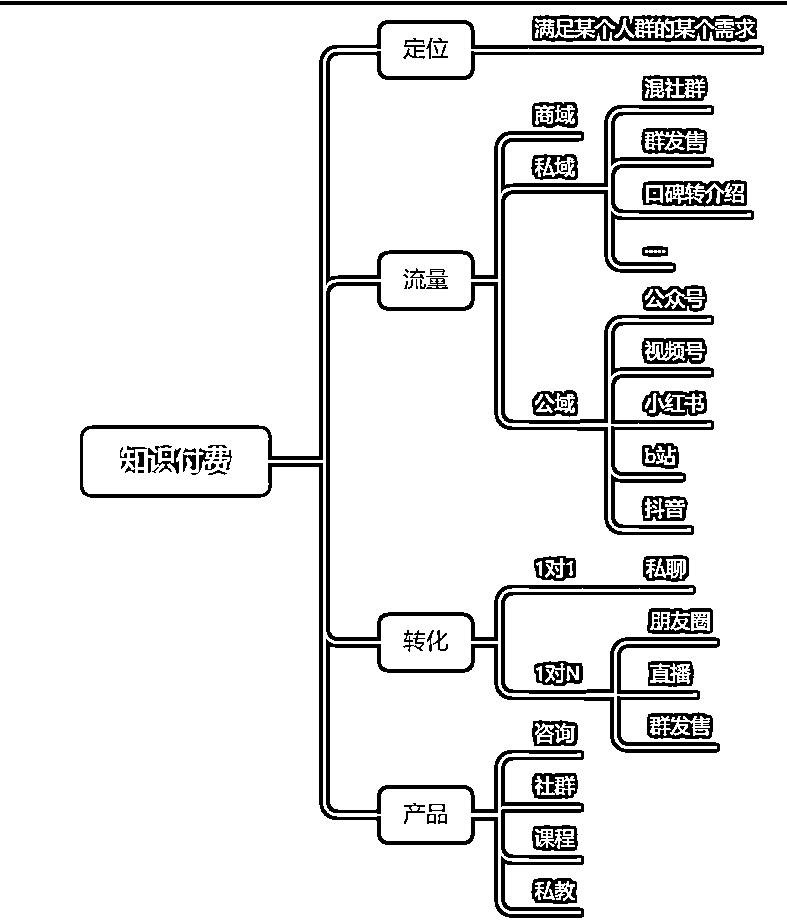
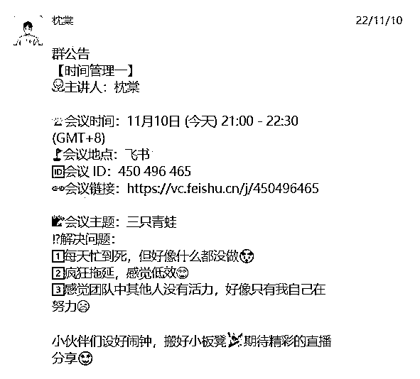
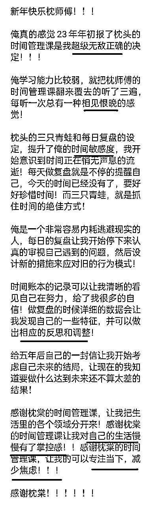

来源：https://p3ak6osfed.feishu.cn/docx/GyKEdc3lXodtrhxXqnvcXGohnDd
生财圈友们好呀，我是枕棠，今年20岁，985大三在读，也是一名时间管理教练。
在生财泡了一年多，商业认知得到了很大的提升，让我这个曾经自卑无比的985做题家，边拿奖学金，边实现月入5w，拿到一个让自己满意的结果。
因为有些完美主义，所以一直没有冒泡分享，在梨云老师的鼓励下，终于在今天，打磨出了这篇帖子。
整篇帖子从定框架，到撰写，修改，排版，用一个多月。
从商业原理的阐述，再到小白入门知识付费的攻略，再到[定位，产品，流量，转化]这四个要素的进阶方法论，毫无保留的和大家分享我在自媒体创业上的经验和心得。
我来自陕西18线小县城，在上大学之前没有坐过火车，没有坐过飞机。
上大学之后，见识了大城市的繁华，物欲被狠狠地激发出来，可是，父母却从来没有教过我任何商业思维。
最开始，想赚钱的念头，就来自于一个个现实落差的瞬间。
是为了攒200块钱，一个月省吃俭用，对生活费精打细算的瞬间；
是同学聚会，大家畅聊旅游的有趣经历，而自己只能沉默的瞬间；
是600块一顿的海鲜自助餐，只能隔着玻璃看一眼就离开的瞬间……
以上种种，让我上大学之后，最想做的事情，就是搞钱。
做过线上家教，一周7小时赚120，做过视频剪辑，出卖廉价的劳动力，让我看不到更大的可能性。
我开始意识到，我想要做的是具有复利效应的事情，越做越赚钱，越赚越轻松。
当商业意识开始觉醒的时候，商机的寻觅，就变得轻而易举。
在今年3月的时候，虽说已经赚到了六位数，但我对赚钱只有一些模模糊糊的感觉。
因为我的盖洛普“思辨”和“战略”都很靠前，如果不清楚自己为什么能赚到钱，不清楚背后的底层逻辑，我就会有些不舒服。
所以我就去参加生财线下聚会了，就去翻了很多书，直到某天在健身的时候，才终于打通了体系，得到了令我自己满意的结论。
那是3月的一个下午，风和日丽，我出门健身。
和天气相对应的是，我的运气和状态不太好，用爬楼机的时候不小心把腿摔伤了。
简单消毒后，就坐那和健身房老板与另一个会员唠嗑，很巧的是，那个会员是个剧本杀店老板。
所以这场唠嗑就变成了“三个创业者的聚会”，我们唠剧本杀，唠健身的动作，唠着唠着聊到了商业上。
越聊我越觉得，虽然我们做的行业，健身房，剧本杀店，知识付费看起来毫不相关，但似乎有一些共性。
我们似乎都会担心流量问题，不管是大众点评，微信裂变群发售，还是小红书引流，似乎都没有特别好做。
我们似乎都会担心转化问题，海报的设计总要认真斟酌，健身房的体验课也要认真设计，剧本杀第一次盒装剧本，以及我做知识付费的低价品，都是认真打磨和交付的。
于是我似乎发现了，一些底层规律，一些商业的本质。
第一个我发现的本质是：
任何一个生意，任何一个toc的商业模式。
都可以拆解为由【流量 产品 转化 定位】这四个因素构成的闭环
包括健身房，包括知识付费，包括剧本杀......
那这四个因素分别是什么呢？极简版在上面这个图中，而详细部分我们不妨来展开聊聊。
定位：满足某个人群的某个需求
比如说健身房满足的是锻炼的需求；
而剧本杀店满足的是娱乐放松的需求；
而我的时间管理的知识付费满足的是人们迷茫摆烂想要更加自律的需求。
我觉得定位这个要素，会是四个要素中，最重要的部分。
因为只有当我们有了清晰的定位，
并且在对应的需求领域有了知识和技能上的积累，
在对应的客群心理有了深度的把握
我们不管是引流，交付，转化才能如鱼得水。
比如说开一个好的健身房，要去上高质量的课，亦或者是谈单，还是宣传，都需要清晰的知道，健身人群的心理想法，同时还要对健身知识有着一定程度的了解。
流量：让人们看到商家的方式
流量的获取也有多种多样的方式，但本质就触达，让人们看到商家。
比如说我知识付费的流量会来自于小红书引流，
而健身房和剧本杀店的引流会来自于他们在大众点评投放的广告，
而我们生活中看到的很多广告牌和传单，其实都是商家在搞流量。
不管通过什么样的方式，让感兴趣的人看到对应的商家。
商家获得他们的电话或者微信，然后反复的进行触达，进行转化。
就是所谓的搞流量。
产品：用户需求的解决方案，也就是我们出售用来赚钱盈利的东西
对健身房来说，可能就是一节高质量的私教课;
对于剧本杀店来说，可能就能一场优秀的演绎剧本;
对于我的时间管理知识付费来说，可能就是我的课程和私教服务。
不管是什么服务，只要我们能够拿出一套东西来满足用户的需求，
就是我们制作了一个好的产品。
转化：用一些方法看到我们产品的客户选择成交
这一部分就是营销转化相关的问题了，
对于健身房来说，他们可能会有一些免费的体验课。
对于知识付费，可能发朋友圈，公众号直播来引导用户购买产品。
所以一个最简单的商业闭环其实就是凑齐了【定位 流量 转化 产品】，这四个要素之后就能赚到钱。
首先我们确定了自己的定位，然后根据这个定位做出某个产品。
然后让让人们看到你，知道你这边有某种服务或产品。
然后你通过某种方式吸引，说服他们来购买这个东西。
成交后你按时按量交付给他们，然后赚到钱，到这里就完成了一个最简单的商业闭环。
可能有些复杂，不过没关系。
在后面实操部分，我会具体给大家介绍一个知识付费的小闭环要怎么去实践，怎么去跑通。
我们在中国可能可以听到一个传言：
富二代可以花天酒地，但是千万不要创业。
因为传统的创业模式往往需要很多的资源，需要很多的启动资金。
比如说如果要开一个健身房，购买健身器材，房租，水电费，广告费都会是必要的开支。
而创业除了需要资源还需要什么呢？
需要人，或者有脑子的人，认知足够高的人！
到了这里，我们似乎能够发现，个体创业似乎需要两个东西：认知和资源。
这一点似乎很好证明，因为创业中的任何一环。
任何一个可以起到引流作用/转化作用/交付作用的事物，都是认知+资源的产物。
认知的话，就是审美，知道一个东西应该是什么样子。
是方法论，知道一个事情应该怎么做，为什么要这么做。
资源的话，就是一切可以使用的东西。
包括钱，包括时间，包括精力，包括人脉关系。
举个例子，一个起到交付作用的事物——一节高质量的健身私教课。
资源就是：教练的指导时间，健身基础设施，洗浴设施，场地，或者说就是购买这些健身设施的资金。
认知就是：要如何指导一节高质量的健身课，健身设施要怎么购买，怎么安放一个好的健身设施......
认知+资源=一节高质量的健身私教课
再举个例子，一个起到引流作用的事物——一个高质量的小红书笔记。
资源就是：一个电脑，一个自媒体人的时间，一些模板。
认知就是：知道如何写一篇高质量的笔记，知道如何选题，知道如何制作封面，知道如何制作小标题。
认知+资源=一个高质量的小红书的笔记
于是在这里，我们似乎再次印证了一个结论。
那就是对于个体创业来说，我们似乎只需要两个东西，认知和资源。
资源我们要通过各种方式去获得，有的可以传承，有的可以购买，有的只能自己积累。
认知我们要通过各种方式去学习，去读书看课，亦或者加入高质量的社群圈子去学习。
而同时
不同的商业模式对资源和认知，要求高低是完全不同的。
比如对于电商来说，对资源的需求就会比知识付费高很多，因为需要提前花钱囤货，给平台缴纳保证金等等。
但是对于知识付费来说，对资源的要求，非常低，几乎是没有的，只需要一个手机，然后投入时间就可以了。
既然做知识付费对资源的要求这么低？
那为什么做知识付费成功的人还只有那么少呢？
我想可能就是因为：
做知识付费对认知的要求会特别高。
在做知识付费的这两年里，我愈发深刻的体会到了这一点。
因为似乎知识付费的每一步路，似乎都是需要坚强的认知来支撑。
比如说，朋友圈怎么写？一天发几条？软广怎么写？课程怎么做？怎么录制？怎么定大纲？
这些可能都是我们会遇到的问题，这个时候一味的猛冲是没有用的。
只有去学习，去自己进行知识付费，才能获得对应的认知，才能赚到对应的钱。
你赚到的钱，是你对这个世界认知的变现。
所以下一部分我将展开分享下。
于我而言，我做自媒体能够月入5w的底层逻辑和认知。

这里先简单放一个逻辑图，大家可以具体看下了解下，是一个知识付费形式的总览图。
描述了，流量的几种来源，产品的几种模式，转化的几种方式。
留个印象就好，我们后面都会提到。
有一句很经典的话，叫做
“何以解忧，唯有实战”。
如果有人问我知识付费入门的最快方法，那一定是
“何以解忧，唯有闭环”
就是对于小白来说，入门最快的方法，不是学习多少高大上的理论。
而是我们先跑通一个闭环，快速见到钱，感受引流，转化，交付的整个流程。
只要全程靠自己在互联网赚到第一笔钱，我们就能快速完成身份的转变。
瞬间从小白围观者蜕变为一个互联网创业者。
那怎么样快速跑通一个闭环呢？
我见过最好的方式便是：做一个9.9的陪伴群
通过去做这个陪伴群，我们去实现自媒体的最小闭环。
将[定位，流量，产品，转化]这四个部分都凑齐，不管凑的多么简陋。
只要能凑齐就好，我们就能成为一个互联网创业者。
接下来我们来详细分享下要如何凑齐这个简单的闭环呢？
对于我们刚开始做自媒体的朋友们来说，找到一个特别细分的定位是比较难的。
因为我们没有经历很长时间的探索和学习，也没有拿到过外界的反馈用来调整。
那也许我们可以换一个思路，我们也许不用去做很细分的赛道。
不需要具体定位到时间管理，学习方法，还是搞钱，情感，玄学什么的。
我们可以做一个笼统的定位——成长。
不需要具体定位到电商，小红书，视频号，爆文写作，视频号相关什么的。
我们可以做一个笼统的定位——赚钱。
赚钱和成长是对人们需求的总和，需求切的很泛，收不了高价。
但恰好适合我们去做低价的小陪伴群。
一切想要变的更好的人，一切想要赚钱的人，都可以进来学习。
只要9.9，买不了吃亏也买不了上当。
亦或者只需要给出一个信号：
当确认了定位之后，接下来要去思考一个新的问题，就是我们究竟卖什么东西呢？
虽说自媒体创业时常会被不懂的人诟病为“做营销”“卖空气”，但我们不能真的卖空气，我们要卖知识。
我们要卖的东西叫做xx的成长陪伴群，xx是你的ip名字。
而这个群内交付内容包括但不限于
1.自己成长过程中的所思所闻。
2.自己报名一个高质量课程后学到的东西。
3.自己购买或者搜集到的资料包。
4.我们培养一个技能所经历的心理历程。
5.参加一个线下聚会所获得的东西。
6.自己读一本书的所思所想
任何一个我们自己学到的觉得有价值的东西，都可以分享出来，作为我们陪伴群的交付。
不用担心自己交付的质量是不是很高，9.9还要什么自行车，只要我们能够提供一点信息增量，那就是很好的事情了。
聊完了我们大体的交付内容，接下来来介绍一下我们所需要的正式运营物料。
作为简单的陪伴群，我们只需要一个物料，即——群公告。
群公告写法
群公告是我们一个社群产品的核心，是为数不多能够给用户强烈交付感的东西。
群公告可以写很多东西，广告，群内活动，社群介绍，群主介绍等等。
但最重要的是两个东西，过往分享积累和社群介绍。
过往分享积累一个链接即可
社群介绍要说清，社群的分享频次和内容定位。
eg：欢迎大家加入枕棠的成长陪伴群，本群主要分享时间管理和最新的赚钱知识，每周六晚八点分享。
往期分享汇总：（此处放整理好的飞书链接）。
我们做知识付费的流量目标就是把其他人加上我们的微信，而后我们就可以反复多次的触达对方了。
所以我们有很多的思路可以去做，比如说发小红书，比如说写公众号，比如直播，更比如说组织一场公开课。
但这些都有些复杂，既然我们的目标是以跑通最小闭环为目标，为做好最小的事情的为目标。
那我们怎么简单，怎么来，所以我们要做的便是从一群引流方式中，找到最简单的那个。
也就是混社群加好友，简单来说分为两部分。
1.加群
展开来说，去加入一些喜欢成长，喜欢赚钱的人的社群，社群或者是付费亦或者是免费的。
加入社群之后，大多数社群都允许发自我介绍，可以尝试发自我介绍，就会有同频的人选择链接我们。
我们也可以主动去添加和链接好友。
2.私信沟通
加上好友后，我们要主动发送自我介绍，并且赠送一份我们自己收集的资料作为见面礼。
绝大多数人都是社恐，都是哪怕加了好友也只会尬聊的，只要主动的添加好友，并主动的发生自我介绍和见面礼，我们就已经超越了绝大多数人了
长此以往，反复循环，当我们私域有了300以上的时候，我们就初步解决了流量问题。
到了这里，我们有了定位，有了产品，有了流量，只需要再去凑齐最后一个因素，就能跑通自媒体闭环了。
而关于转化，一开始我们也不用去学习太过复杂的东西，公众号直播等等都需要一定的学习成本。
我们就去做简单的，普通人也会去做的事情也就是去发朋友圈，去介绍我们的产品就好了。
但这个时候，我们还有一件事情要做，就是写一个宣传物料——海报
对于我们新手来说，制作海报也不用去学习稿定等的海报设计，只需要用手机笔记软件即可。
尝试过比较好用的手机软件是锤子便签和苹果自带笔记软件，前者在应用市场即可下载。
宣传海报也不用很复杂只需要写清楚两个东西：交付服务和价格。
eg：
而当我们做好海报之后，就可以直接将我们的海报私信发给我们觉得会感兴趣的客户，或者发朋友圈宣传即可。
于是到这里为止，我们介绍完了制作一个小的陪伴群，跑通一个自媒体闭环所需要的一切因素。
当然这一部分我只给出了最简单的部分介绍，
更详细的部分大家可以加入一些社群，或者只是在朋友圈搜索“陪伴群”，便能获得一些可以参考的海报物料。
而除了技术上的因素，在我们刚尝试入局的时候，我们往往还会遇到一些思维卡点，阻碍我们去跑通闭环，去成功拿到结果。
当我们加入了一个优质的圈子的时候，总会看见里面有很多的前辈和大佬，他们既温和又强大，写的文章还特别的有价值。
然后我们就会想“和他们相比我真的好差，他们才配做知识付费，而我只配跟在后面学习”
但实际上，我们是完全配去做知识付费的，因为知识付费有一句名言是
“100分的教90分的，90分的教80分的，60分教不及格的”。
哪怕我们很菜，但只要会读书，会写作，会表达，亦或者说你将这篇帖子读到现在，便说明你的分数便至少已经及格了。
我们尽管可以去分享自己的知识，去做知识付费，
亦或者哪怕你还是很不自信，我们先做出产品去卖，去看看到底有没有人买，相信市场的反响。
如果有人买，那就说明我们的产品还是很不错的，没有人买，我们再调整再懊恼也不迟。
如果你也是农村或者工薪家庭出身，自小父母可能便喜欢和你讲述一个概念即“赚钱很难，不要走歪门邪道”。
但实际上，父母赚钱难，
可能是因为他们没有足够的认知，他们并没有像我们一样读过高中读过大学。
当然最重要的东西是他们没有选对行业，新媒体总比种地更贴近时代风口，在风口猪都能飞起来，何况优秀的各位呢？
而同时，在传统观念中，来钱快的方式往往都是歪门邪道。
我们人性也往往习惯把自己理解不了的东西归于道德的败坏，比如人们很喜欢将互联网创业称为传销。
以上种种加码，我们就会产生一个念头：
“收钱是罪恶的，互联网创业就是传销，我不配收钱，我应该去打工靠自己的双手致富”
怎么打破这个荒谬的念头呢？有几个思路
1.我们不是在诈骗，我们是在提供价值
我们分享的东西是我们自己学习过的的确确有价值的，为我们付费的人也都是认可这些价值的人，你情我愿，等价交换，有何不可？
2.我们不是敌人，我们是朋友，我们是在互相成就
知识付费本身就是一场互相成就的过程，一方提供知识，一方提供金钱。一方学到东西，提高技能；另一方用获得的金钱继续投资学习，然后飞速成长。
于是到了这里，我们既拥有一个最小自媒体闭环的全部细节，还拥有执行路上可能会遇到的心态卡点。
强烈建议你可以开始尝试，去试着通过自媒体赚到自己的第一笔钱，正式成为一个互联网创业者。
而当我们成为入门之后，接下来就要去考虑提升自己，让自己成为一个月入过万的自媒体创业者。
而接下来我便来分享【定位，流量，产品，转化】，这四个维度分别如何去提升，使得我们收入倍增。
首先要聊的事，我们不需要去在短时间内提升这四个版块的每一个，[定位，流量，产品，转化]，我们精力也肯定是不够的。
事实上，这四个量级，只要有有一个版块有了突破，我们的收入就会上一个台阶。
而这其实并不容易。
在做自媒体的这两年时间里，我看过很多人做过低价的陪伴群，而这些人中的绝大部分后来都止步于此。
原因就在于他们拘泥于原来的方式，形成了路径依赖，沉溺于舒适区，没有尝试去做提升。
他们没有进阶意识，他们也不知道怎么进阶。
他们一直在重复自己之前成功的那个过程，继续去混社群，继续去卖自己的陪伴群，继续去发一些没有营养的朋友圈。
在这个过程中，他们逐渐发现做的越来越吃力，能赚的钱越来越少，自己也越来越累，然后选择了放弃，回去重新考研和上班。
但实际上只要掌握正确的进阶方法，突破到月入过万的层次并不会特别难。
知道入门的方法很重要，知道进阶的方法会更重要。
接下来进阶的方法分享给大家！
定位上的进阶就是为自己确定一个比较细的赛道，然后专注他。
比如之前做了陪伴群后，你的定位是成长。
那接下来你的定位就要切到成长下面的小版块里面。
比如：时间管理，学习方法，思维模型，知识管理，亲密关系，恋爱成长，演讲能力，写作能力，
比如之前做了陪伴群后，你的定位是赚钱。
那接下来你的定位就要切到赚钱下面的小版块里面。
比如：项目拆解，小红书引流，视频号带货，小红书无货源，公众号爆文等等。
这个时候有的朋友可能会说，"不切小赛道，我想赚所有领域的钱可以吗？"
我的回答是“一定不行”
如果你要做知识付费的话，那一定是要切到很细的定位之中的。
原因也很简单，我们后续做引流，做转化，做产品。
对我们的专业知识，对客群的了解度，成功案例的积累，都有着一定的要求。
而
不管是专业知识的积累，对客群的了解，都需要十年如一日的积累和专精，我们才能钻研出有价值的知识，我们才能积累口碑，获得更多人的信任。
而同时
我们的时间是无比有限的东西，如果我们把精力分散不同的领域，而不选择专精的话，那大概率会很难拿到结果。
两年前有很多朋友和我一起做ip，最开始就注意力分散，经常中途易辙的人有很多，他们会很难满足好一个人群的需求，也很难做好一个有口碑积累的产品。后来，他们大多都没有赚到钱，回去考研了。
还有一个原因是
理论上来说我们不可能赚到所有人的钱，因为我们不可能有足够的精力来满足所有人的需求。
那接下来我们遇到了一个新的问题：
我们要如何找到适合自己专精的领域呢？
换句话来说
我们要如何找到自己的定位呢？
两个方法分享给大家
在我刚开始做自媒体的时候，学到一句概念叫做
“你能创造多少价值，就能赚到多少钱”
而对于知识付费来说
创造价值，其实就是教会别人他们之前不懂的东西。
而我们要去教别人，便有一个前提是
我们的能力一定是强于他们的，我们才能教他们。
但是我们时常很难发现自己强于他人的点，很难发现自己的天赋，但只要愿意找，总能找到，就算找不到，也可以从0开始积累，这里分享给大家几个问题参考。
1.你常被请教什么问题
2.你常常得到什么夸奖。
3.你做什么事情总是毫不费力，却能超越大多数人。
前两个问题要在我们的日常生活中去寻找和接纳反馈，第三个问题却可以去借助学习盖洛普。
举个例子，枕棠做了近两年的时间管理，但最开始做时间管理是因为一件很有意思的事情。
我在大二上的时候加入一个大佬的线上团队。
因为想要链接大佬，就在里面做着一些免费的工作，组织着一个几十个人的团队。
然后某一天有个组员问我“棠哥为什么你效率这么高呀”。
我当时愣了一下，然后说“啊，我效率很高吗，没有吧”
然后和他们深度的聊完之后，发现好像的确是这样呀。
我一天可以工作10个小时，但很多人一天只能专注工作三四个小时，然后我就在工作群内部做了一个分享。

然后你猜怎么着？
那天分享完之后，反馈直接爆炸，有非常多的小伙伴都说，我讲的太好了。
也是因为这次提问，这些夸奖，我才发现原来我效率这么高，原来我时间管理这么厉害。
那不妨就来试试做对应的自媒体吧，然后就到了现在。
我们所遇到的困扰，遇到的问题，解决之后，就可以作为我们的ip定位，而且是最好的定位。
我们每个人都是一个无比独特的个体，在世界上找不到我们完全一样的一个人。
但我们遇到的问题往往都是重复的，我们所困惑的问题往往都在他人身上发生着。
不管是迷茫，还是说不够自律，还是不知道如何人际交往。
还是说感觉很难掌握知识，亦或者想赚钱却赚不到。
这些我们会遇到的问题，这些自己会感到困惑的问题，绝对不止我们一个人有。
和我们同年龄/同情景的人，大概率也都有。
那这样的话，我们似乎能得出一个假设：
能够解决这些问题，那我们就可以去教别人了，教那些“曾经的我们”了。
而这个时候的我们会是这个问题最好的讲师。
因为我们刚走过类似的路，刚从坑里爬出来。
所以对这个坑里会遇到什么细节，会遇到什么困难都会清晰无比。
那既然我们可以帮别人解决问题了，教会别人东西了，那是不是就意味着，我们可以去做这个赛道的ip呢？
我的答案是“yes！”
而这个过程最令人开心的还不是我们找到了定位，
而是我们从深陷问题→解决问题→将问题的解法交给别人这样的一个过程中。
最大的受益者并不是其他人，而是我们自己。
我们把自己从深渊中拉出来，将原来的问题解决，然后在教别人解法的时候，获得一些金钱和正反馈，指引着我们进一步的学习和优化自身。
随着我们遇到不同的问题，然后解决他们，我们的定位也会发生一定程度的浮动，但也没有什么关系。
因为
接下来分享我找定位的故事给大家，希望对大家有些启发。
枕棠我从小开始就是一个很不自律的人，从初中开始每天晚上都会玩手机到凌晨，然后再开始学习。
最后也是很顺理成章，只考上一个比较差的高中，一本率应该不到10%，好几年学校最好的成绩就是一个普通的211.
然后在高中的时候，发生了各种事情，发愤图强想要考上985，但是学校环境不能支撑我达到这个目标。
所以只能回家自学，而回家自学，没有学校管制，对自律能力提出了非常高的要求。
我们我要想办法去提高自己的能力，而接下来的故事便是
我一边回家自学，一边培养自己的自律能力，一边自己规划模拟考，最终成为了学校近几年唯一的一个985.
而后上了大学，便慢慢的去分享时间管理和自律的相关的问题，像上一个版块提到的邀请分享也是常有的，所以慢慢就开始做了时间管理相关的知识付费。
而后再慢慢的，做了一段时间管理的知识付费后。
我发现了自己的自律能力似乎又上了一个台阶，当几乎不会再为自律所困扰时。
我又遇到了一个新的问题——迷茫。
展开来说就是，我自己已经可以一天可以高效工作10个小时了，但是却常常不知道该做什么。
那会我还在读大一，只喜欢看书和学专业课，以及赚一点零花钱。
慢慢的，读书读了100多本，逐渐感觉有些索然无味。
慢慢的，专业课也学的不错，几乎都是接近满绩。
但就是会非常迷茫，很索然无味，
不知道自己的未来该何去何从，不知道自己要做些什么才有意义。
我似乎缺乏了很多的“意义感”
于是我就去学习了目标管理，去看了很多书，学了很多东西。
而我有了一个清晰的目标管理系统，不再迷茫，能够坚定的去拿到一个个结果之后。
我就知道我就可以去教目标管理了。
而同时研究清晰了目标管理后，我感觉我有了一个核心的目标就是：想要早日经济独立，早日财富自由。
而有了这个目标后，我便发现只是单纯的按部就班的保研就业赚钱，不能实现这个目标的。
所以我就思考着要去做自媒体，去学习怎么做流量，去学习怎么做产品，去学习怎么去做课程，然后就在大三做了月入5w的成绩，而后我还学习了很多商业相关的知识。
我想，这个时候，我又能去教别人做知识付费了。
所以聊到这里大家可以发现
我的成长和定位变化是一个有些刻意，又有些自然的东西。
都是我自己遇到了一个问题，然后我想办法去解决这个问题，然后再将他讲出来，似乎就能够赚到钱了。
我很推荐大家也去试试这种模式，因为
上面陪伴群模式中，我们介绍了私域中最简单的引流方式，就是去混社群。
但混着混着我们就会发现这个方法的两个局限之处。
1.愿意链接别人的人往往都是比较有限的，如果你加的社群比较多，会发现活跃的几乎是同一批人。
2.主动的链接好友只能小范围的进行，如果大量进行可能会被举报。
以上两个局限之处，会决定了“混社群加人”，只适合于起步，而不适合放大。
所以想要赚到更多的钱，有更多的流量，我们必须要对流量板块进行进阶。
在我看来，我们流量版块的进阶主要看待两个指标，
第一个是我们的私域存量，其实也就是我们的微信好友数目是否有增加。
可能在起步阶段，我们的微信好友数目只有几百个，进阶阶段就有5000个以上，或者上万。
第二个是我们获取流量的渠道，之前我们获取流量的渠道可能只有混社群加人。
进阶之后的渠道可能就会有口碑转介绍，还有写公众号做小红书引流等公域引流的方式。
整体来说，我们获取的流量渠道可以简单的分为，商域，私域和公域。
其中每个版块都有很多的门道和细节，这里先分享小红书引流的方法流程给大家。
创作系小红书笔记的第一步一定是寻找选题
所谓选题就是一篇笔记的核心论点和主题，也可以说一个内容，一篇笔记的灵魂。
所以他会直接决定一篇笔记会不会爆，会不会有人看。
而在学习如何做小红书之前，我发小红书往往都是直接搬运自己的朋友圈。
没有特意设置过选题，那结果便可想而知，赞藏的数量非常惨烈，甚至不到两位数。
后来在老师的教导下，我才懂得了原来小红书的选题是要找的，而不是单纯的自己臆想。
那要怎么找选题，我实践下来有个方法非常好用。
去寻找已经爆过的选题
在我开始学习小红书后，学到的最重要的一句话是
“爆过的选题会一直爆”。
过去大家的喜欢的选题，以后大概率还会继续很喜欢。
比如这是我扒下来目标管理领域过去一年的最爆款的选题，会发现最火的前十里面与三个是和“布局2024”相关的。
原来爆过的选题未来会一直爆。
那怎么样去找到对应的爆款选题呢？
我们可以去小红书/数据平台搜索自己的赛道关键词，然后摘取高赞爆款的选题来复制。
当我们找到了适合的选题之后，接下来就要开始制作笔记了，而制作笔记也有很多的细节。
（1）要在有干货的同时，写的简单易懂。
我自己本身是长文爱好者，发朋友圈都要写2000字。
写公众号或者写帖子没有一个完整的体系是不会下笔的，动辄就是万字左右，这篇近两万字的帖子也归咎于这个习惯。
这个习惯写长文的时候很有帮助，但在写小红书的时候却令我苦不堪言。
因为我总是喜欢写长文，写很多干货，写很长的逻辑链，而这样的结果便是
认真写了一篇笔记，根本没有几个赞藏。
直到后来幡然醒悟：
娱乐平台，写作的通俗易懂和口语化无比的重要，可能会比干货更重要
那要怎么做到这一点，我总结出了几个小方法
1.要素要少，一篇笔记只讲一个问题，最多只讲五个方法。
2.文字要短，最好可以将一句话缩短到20字以内。
3.多用语气词，比如“~”“呀”“啊”“嘛”等。
4.逻辑链要短，一个主题尽量在100字说完。
（2）要有架构的创作
当我们确认一个选题，并且懂得了一篇笔记大概的写作风格。
接下来要开始创作，但创作不能随意创作，要有架构的创作才能重复的写出高质量笔记。
而我觉得高质量的笔记的正文，往往是由这三部分构成
1.痛点引入：
在一篇笔记的开始，我们要先引入一个痛点，然后给出自己的解决方案框架，引导用户继续往下看。
因为用户从来不会关心一个笔记你写的多用心，他们只会关心这条笔记是否能够解决他们的问题。
而我们引入一个痛点，并且告诉对方这条笔记能够解决对方的问题。
便能抓住用户的注意力，吸引对方继续阅读，从而完成我们引流与变现的目的
2.方案解决：
这里就是为上面的选题提出解决方案即可，我们可以参考其他类似的笔记是怎么写的，也可以自由发挥。
3.引导互动：
在笔记的正文结束之后，我们要制作一个引导互动的尾页。
可以是引导反馈的钩子，可以是引导收藏的歌单，也可以为了引流的模板。
这里分享一篇我近两万赞藏的笔记元件，分享给大家。
（1）评论区引导，引起羊群效应
按照上述部分找到选题并创作高质量的笔记后，并且在末尾留下部分钩子后。
用户就会对我们提供的模板资料感兴趣，但是感兴趣还不够。
因为大家我们知道中国人总是内敛害羞的，想要让他们主动依旧有些难度。
而这个时候呢，我们只需要请一个朋友（水军），在评论区发送“求模板“”。
就会源源不断的人评论，而每一个评论的人我们都可以选择私信，而后开始引流。
（2）制作引流物料
“所谓引流的秘诀就是一句话加我领资料”
人们都是利己的，用户不会主动添加微信，除非有利可图。
所以在准备引流的时候，我去整理了很多时间管理领域的资料，作为钩子来引流。
（3）图片汇总
整理好自己的引流物料后，可以将物料和自己的微信做一张笔记图片出来，然后用小号进行发布。
（4）准备好以上物料之后，我们就可以我们将我们的引流笔记分享，在上面评论区发送过“求模板”的人。
如图：
（4）当客户加上我们的微信后，我们在发送资料的同时也可以写一个简单的自我介绍【你是谁，你能给他带来什么】，做一个稳定的触达和初步转化。

销售或者说转化，分为很多种方式，本质来说就是为了让看见你这个产品的人产生购买的欲望。
有一对一，比如直接私聊。
也有一对多，比如写公众号，发朋友圈，开直播，做群发售等等。
所以关于我们转化的进阶。
一个是形式上的
也就是学习除了私聊和朋友圈以外的其他转化形式，比如学会直播，群发售等高质量的方式。
比如说我们学会了直播，这是一种很好的转化方式，因为它能营造一个场域。
面对面的面部表情和肢体动作，还有声音，它所能传递的信息量会比文字大很多，而人们也常会被情绪给打动而冲动下单。
一个是深度上的
我们要去学习，怎么样不让人反感的聊天成交，怎么发好朋友圈等等。
比如说我们深度学习发朋友圈后，会发现我们发朋友圈需要规划着发，一部分发软广，一部分发干货知识，一部分发我们的生活日常。
当然关于聊天销售，如何发朋友圈，如何直播，如何做群发售，在我们圈内已经有了很多的介绍，此处就不班门弄斧了。
在转化的进阶上，我想分享给大家一个，在我发朋友圈，在写公众号长文的时候，设计产品卖点的时候，能够有的放矢去提高转化率的公式。
对于一个做自媒体的产品人来说，最理想的情况就是。
我们我们做出了一个很有价值的产品，而后用户恰好需要这个东西，我们只需要简单介绍产品，用户就会立马选择为我们付费，
但这种情况是很少见的，比较常见的情况是，我们用“十年磨一剑”的心态做出来了一个“好产品”，然后发朋友圈销售后，来购买的人寥寥无几。
这背后的原因在于
用户感知到的价值≠我们产品本身的价值
用户又没有听过我们的课程，那自然是不知道我们的课程有什么价值。
他们感知我们的产品价值，只能通过我们提供的一些免费资源和对产品的描述。
那用户到底怎么感知价值呢？
是凭感觉吗？凭玄学吗？
不是的，是有底层逻辑的。
做了两年自媒体后，我总结出了一个用户感知价值的公式，分享给大家。
用户感知价值=[客户渴望获得的结果×客户获得结果的可能性]/[获取结果所需要付出的代价×需要付出的时间]
分子部分有：客户渴望获得的结果，客户获得结果的可能性
分母部分有：获取结果所需要付出的代价，需要付出的时间
所以为了让我们的产品卖的更好，我们让用户感知的价值更多，我们需要增加分母，减小分子，由此我们可以延伸出很多实用的方法。
增加分子：
关于增加分子方面，根据公式我们能得到这样几个措施。
a.客户渴望获得的结果：
（1）选择有较多客户感兴趣的方向
也就是寻找痛点，更清晰的知道客群所处的环境，所面临的困境，所期待的结果。
（2）将普通场景切换为极端场景
很多时候我们知识付费产品能够带领用户达到的结果是比较有限的，虽然有提升，但短期可能看起来没有特别惊人。但是我们就可以描述提升后，比较极端的场景，让用户去感知到我们产品的价值。
比如说，我要做一个教小白做知识付费赚钱的产品，肯定不能说月入过万后存款看起来很多。
而要说在其他同学都在奔波投简历惶恐无比的时候，你能够一边做自媒体一边潇洒自在。
在其他同学都在还在为父母一两千的生活费精打细算的时候，你能够经济独立，去全国各地旅游，玩剧本杀，买自己想买的一切东西。
不要告诉用户平凡的生活，在不虚假宣传的基础上，请告诉他“乌托邦”。
b.客户获得结果的可能性：
（1）先验价值：
包括但不限于在出售产品前，提供一些文章，视频课。
让用感知到免费产品也是有价值的，也是有启发性的，能够一定程度解决的自己的问题的。
于是愿意付费向你购买更多更全的解决方案。
（2）自我和学员案例：
展示自己通过产品方法林成长的案例，以及往期学员学历的案例，让对方相信在你这里学习是能拿到结果的。
（3）理论体系：
阐述一个理论体系，让用户觉得拿到结果变成了一件确定性的事情。
关于理论体系
举个例子，我在我的私教文章中提出了一个理论体系：
人的行为是由潜意识和意识（理性）决定的
关于潜意识部分是我们不自觉的习惯，理性部分是我们大脑中的认知框架思考之后做出的决策。
所以如果要改变我们的行为模式，让我们从原来摆烂的状态转变为自律无比的状态。
那么只需要改变两个东西，就是我们的习惯和认知框架。
而我的时间管理私教，就能够通过各种解决方案来改变习惯和认知框架。
写了这样的认知框架后，我的时间管理私教便提高了蛮多的转化率。
当然，不管是先验价值，还是案例，亦或者是理论体系，都是为了让客户觉得。
在我们这里，有趋近于“100%”的概率帮他拿到成果。
减少分母：
关于减小分母方面，根据公式我们能得到这样几个措施。
a.客户愿意付出的代价：
（1）合理制定价格：
在我们为产品制定价格的话，可以设置一个预售价，正式价，和标价。
标价一般会比正式价高很多，对比之下让用户觉得我们的正式售价很值。
（2）保护用户心力：
很多产品用户在学习的时候会很累，因为主理人看起来很冷酷，看起来不近人情，不敢提问，学起来也会很消耗心力。如果我们文字温和平易近人一些，用户就会学起来就会更轻松。
亦或者课程的课纲看起来都是硬骨头，学起来会很困难，都会让用户觉得学习这个很消耗心力。
但如果说我们将课纲做的比较容易理解，就能有效节省用户心力和认知资源。
b.客户愿意付出的时间：
（1）预售品给予及时反馈：
很多时候我们会预售一个产品，比如说现在提前一个月规划一个课程，我们会提前很久开始预售，这个可以设置一个报名就可以领资料包，为用户设置一个及时反馈，这样的话便能有效提高购买率。
（2）缩短用户拿到的结果时间：
如果说我们有了一套完整的培养体系，且这个体验是优于市场上的大多数内容的，那我们便可以告诉别人我的产品帮你拿到结果的时间是快于其他产品的。其他赚钱产品需要3个月，而我们的只需要两个月。
关于产品，上面我们只提到一种产品，就是陪伴群。
但实际上知识付费有很多的产品，我简单的列出一个表格，分享给大家。
而我们产品方面的进阶便是，除了陪伴群外，我们能够做出更多的产品。
| 产品服务 | 优势 | 局限 | 价格区间 |
|---|---|---|---|
| 一对一咨询 | 方便了解用户真实需求，积累素材 | 时间只能出售一次，收入有瓶颈 | 100~2000 |
| 线上录播课 | 可以反复售卖，边际成本低 | 价值低，较难出案例 | 99~999 |
| 训练营：录播课+社群陪伴答疑 | 可以带出案例，积累素材，一定程度上可规模化 | 比录播课更耗费精力，边际运营成本较高 | 499~3000 |
| 社群 | 交付比较轻 | 依赖ip自身的影响力 | 100~3000 |
| 私教陪跑 | 客单价高，容易出案例。 | 交付重，占时间较多 | 3000~10000 |
| 线下课，合伙人等 | 没有做过，不太懂 | 5000+ |
我们制作产品一般的成长轨迹会是。
如果我们有一项能够帮到他人的技能，比如对我来说就是时间管理。
1.做出自己的陪伴群，拥有一个可以转化的场域，感受跑通闭环和收钱的感觉。
2.提供自己的免费和付费咨询，为其他人实打实的解决问题。
3.当自己做了很多次的咨询，积累了很多行业相关的知识，和常见问题后，开始制作课程。
4.制作课程售卖的不错后，开始考虑升单，用训练营或私教跑出案例。
5.有了不错的案例，有了一定的ip影响力，开始做更大的社群。
知识付费知识付费，和付费（赚钱），同样重要的叫做知识。
而具体不同的产品，有着不同的操作细节，这里一个制作产品的万能模型。
在上面的“定位”部分，我们我们帮大家确认了自己的定位，现在我们要去开始制作自己的产品。
但实际上，制作产品的过程，其实就是在清晰产品定位的过程。
为什么呢？
不妨我们先来思考一下如何找到产品定位？
首先产品定位一定是“自身能力”和“用户需求”重合的地方。
要在自身能力之内是因为，如果一个东西我们并不擅长，那我们就不清楚他的内容和细节，自然也做不出好的产品。
要在用户需求之内是因为，如果一个东西只是单纯的自嗨，而和用户需求毫不相干，那我们肯定也是卖不出去的。
我们可能对自身能力是清晰的，但我们大概率是不清晰用户需求的。
那如何确定用户需求呢
首先问大家一个问题：
时间管理能力，自媒体能力，学习方法，演讲能力，英语阅读能力他们是用户需求吗？
答案是：不是的，没有一个人会听见学习方法，英语能力这几个词选择付费。
能让用户付费的一定是场景，只有用户亲身经历想摆脱的场景，或者想到达的场景，才是用户需求，用户才会选择为他付费。
比如说，大家不会选择为时间管理能力付费，但是大家会为了摆脱那种迷茫摆烂，效率低下的状态，会为了达到自律无比，目标稳定的推进的状态而付费。
比如说，大家不会为了自媒体能力付费，但是大家会为了脱离寄人篱下的窝囊，花钱抠搜的没底气的状态付费，会为了达到经济独立，通过自媒体赚到钱的状态而付费。
所以用户的需求其实就是 脱离A状态，到达B状态。
A状态是用户的现状，是现在用户正处于，但是不满意的状态。
B状态是用户的理想，是用户想到达，但不知道方法的状态。
而A点到B点的这条线，就是我们提出的解决方案。
将用户从A点带到B点的方法，也就是我们的产品本身。
举个例子：
A点是迷茫摆烂，效率低下的状态。
B点是构建自己的时间管理和目标管理体系，让一切稳步推进并拿到结果。
A到B的线段是 我的时间管理课，我的时间管理私教。
举个例子：
A点读大学后花钱抠抠搜搜，没有底气，买不了自己想要的东西 。
B点是 经济独立，精神独立，跑通自媒体闭环。
A到B的线段是 我的商业闭环营。
所以制作我们自己产品的第一步就是
去确认AB点，确认自己的客群，确认自己的客群需求。
确认自己要带学员达到的状态，然后将AB之间的这条路做成产品。
那要如何确定AB点呢？
1.找种子客户访谈
在我们开始做一个产品之前，其实会大概知道一点自己想做的产品大概是什么方向，也会大概知道那些人可能会需要自己的产品，这些人就是我们的种子用户。
这个时候我们就可以去找自己的种子用户访谈，在和他们聊天的同时确认我们的AB点。
确认A点，我们可以问这几个问题：
1.你最近遇到最大的问题是什么？
2.最近最让你难受的事情是什么？
3.......
确认B点，我们可以问这几个问题：
1.为什么这个问题很重要？
2.他为什么会让你难受？
3........
我们还可以获得一个解决方案，也就是AB间线段的参考
1.你想用什么方法来解决这个问题？
2.你曾经尝试什么解决方案，效果如何？
3.......
2.找同行对比
一般来说，我们选择去做的赛道，如果是一个好赛道，投入后roi很不错的赛道的话，那大概率是有很多的同行。
而关于自媒体有一句话叫做
“同行是最好的老师”
我们大可以从同行哪里学习，来完善我们的AB点，还有产品本身。
（1）同行的产品文与海报：
对于知识付费来说，产品介绍文和产品宣发海报，往往是一个一个产品的精华聚合。
我们能够在这个产品文和海报中，捕捉到很多有效的因素。
比如如果你也是做时间管理的，那分析一下我的时间管理课海报，将会是一个不错的选择。海报中最亮眼的部分往往就是我们产品的AB点。
（2）同行产品的反馈：
我们可以查找同行的朋友圈，同行的公众号，从中找到他们发的用户反馈。
然后能够从用户的反馈中提取出：
用户会对哪些东西比较感兴趣；
会对哪些点感触特别深;
会因为解决了哪个问题而特别激动的来给反馈.
然后从中找出用户关心的点，从而对我们的产品进行开发。
举个例子

这是我的时间管理课里的一个反馈，如果有朋友想做时间管理相关的知识付费，会有这几个点可以参考。
1.让自己生活有了掌控感
2.让自己能够专注当下，减少焦虑
3.能够提升自己的时间敏感度，抓住时间
4......
说到这里大家也许明白了，我为什么说寻找产品定位的过程就是制作产品的过程呢。
因为当我们无比清晰了AB点之后，对他们之间的那条线段，也就是解决方案也会有一个大致的框架。
接下只需要将这个框架，孵化为具体的产品，就可以了。
我一直有一个深信不疑的价值观：
在正确的方向投入大量的时间，拿到结果将会是必然的事情。
走在正确的方向需要足够高的认知，需要学习。
投入大量的时间需要长久的坚持，需要时间和目标管理。
而后我似乎发现。
只要我一直在学习，一直在提高认知，知道什么是正确的事情；
一直在时间管理，在目标管理，将时间投入在正确的事情上；
那按照上面的逻辑来说，取得成功似乎是必然的事情。
而事实似乎的确如此。
两年前我刚刚开始起步的时候，有很多大学生朋友都尝试和我一起做ip。
当时我特别担心“我们这一代创业者会不会特别卷啊”
而到了两年后的现在，我才发现还在继续做知识ip的朋友只剩下很少的一部分。
而“还在继续做的人都已经稳定月入过万了。”
两年时间，说长不长，说短不短。
足够大浪淘沙的筛选掉大多数人。
也足够让一直坚持的人拿到结果。
因为
“难的道路，从不拥挤”
以上，就是今天分享的全部内容啦。
希望能有那一段分享，对各位有帮助，祝大家生财有术！